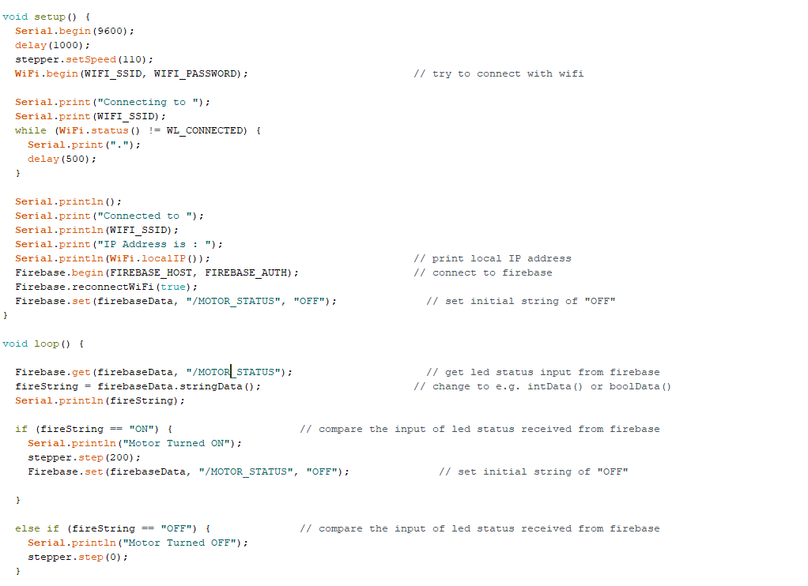

Our assignment is to document our progress with our final project and to start pI spent more time redesigning my project and thinking about it's code. My project isn't too complicated, so it doesn't demand a lot. I plan on building a lazy susan that's divided into parts. The amount of parts will differ on the size of the disc on top. It's supposed to work wirelessly where it turns to a certain section after being stimulated. I visited a lab a few days ago in order to make sure I could build my project in time. Things seemed alright there. I checked out their Prusa slicer and took a quick glimpse at their laser cutting machines before going home. I plan on visiting a few more times very soon!
Although I haven't gone far with building the project, I started writing the lazy susan's code using Nathan's Firebase code as a template. I did some quick modifications to ensure it would work on a stepper motor. The number of steps and the speed of the stepper aren't the final numbers. Those numbers would change, again, depending on the size of the lazy susan's disc. I'll be updating this page constantly with every little change that comes with it. Nonetheless, here's the code: 